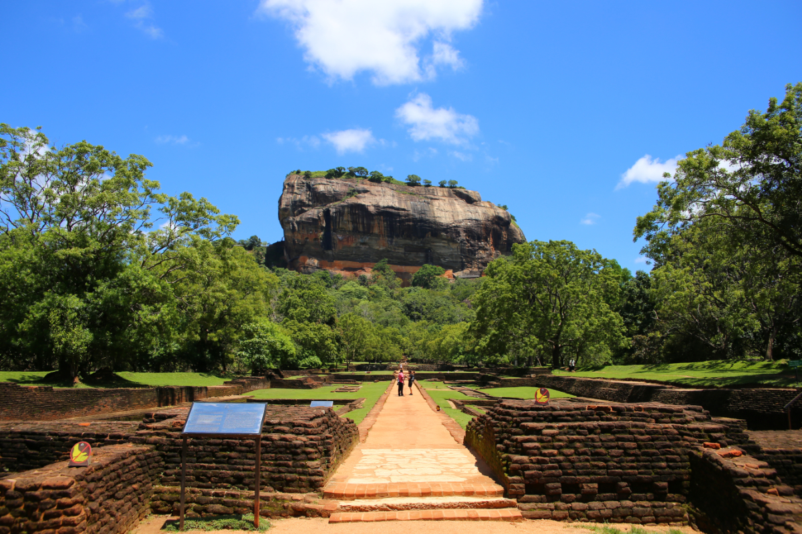
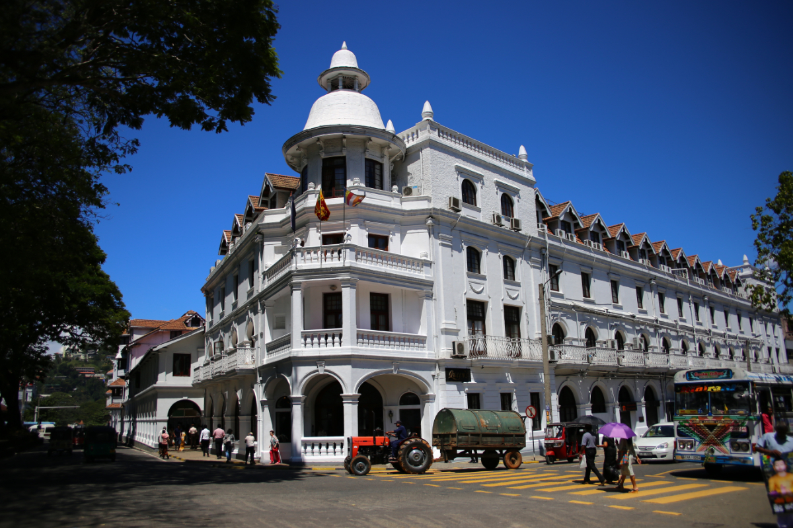
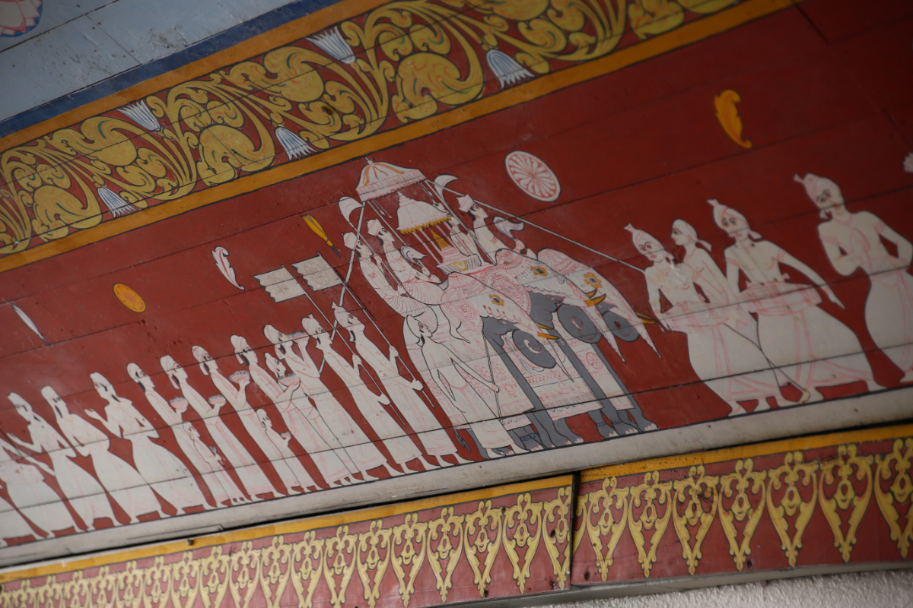

Sri Lanka
スリランカ
主な観光地
- コロンボ
- ダンブッラ
- アヌラーダプラ
- キャンディ
- ポロンナルワ
- ヌワラ･エリヤ
Tourist spot

シーギリヤロック
スリランカの中央より少し北側に位置する遺跡。
巨大な岩の上にある王宮跡と、それを取り囲むように存在
する水路や庭園などの都市遺構が見られ、また岩の中腹には
シーギリヤレディと呼ばれるおよそ1500年前に描かれた壁画
を見ることが出来ます。

聖地キャンディ
スリランカの中央高地に位置する都市。旧王朝の王宮建造物
群や、仏歯寺などさまざまな文化財があり聖地キャンディ
として都市丸ごと世界遺産に登録されており、スリランカの
仏教徒にとって非常に重要な信仰の地となっています。

仏歯寺
スリランカ中部、キャンディに位置する寺。4世紀にインド
より持ち帰った仏陀の犬歯がおさめられており、建物の内部
にはその様子を表したレリーフや壁画が見られます。